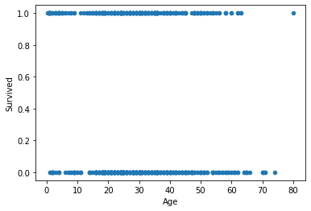
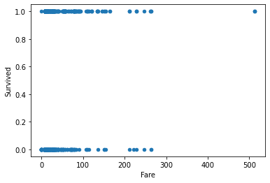

Topic 25-Pt 1: Intro to Logistic Regression#
onl01-dtsc-ft-022221
05/06/21
Questions?#
Announcements#
Sect 25 will be split into 2 study groups.
Sect 26 doesn’t introduce much/anything new
It revisits gradient descent and applies it to Logistic Regression.
We will discuss some of the concepts re-introduced next study group.
We will NOT have an entire study group dedicated to section 26
You will want/need to update matplotlib and scikit-learn ( See IMPORTANT NOTE ABOUT PACKAGE VERSIONS)
Topics in Sect 25#
For Today:
Supervised vs Unsupervised Learning
Logistic Regression - Theory
Applying Logistic Regression with
statsmodelsEvaluating Classifiers
Confusion Matrices
Accuracy, Precision, Recall, F1-Score
If there’s time today (otherwise covered in part 2 tomorrow):
For Next Class:
Logistic Regression with
scikit-learnEvaluating Classifiers:
ROC-AUC curve
Class Imbalance Problems
Types of Machine Learning Models#

Intro to Supervised Learning#
“The term Supervised Learning refers to a class of machine learning algorithms that can “learn” a task through labeled training data.”

All machine learning models fall into one of two categories:
Regressors/Regression
Classifiers/Classification
Regression#
Trying to find the relationship and predict a specific value.
Examples of regressions:
House prices
Salary
Reviews/Ratings
Classification#
Trying to identify what features can predict which class a particular observation/row belongs to.
Can be a “binary classification”
“yes” or “no”
Survived or died.
Diabetic or not-diabetic
Can also be a “multiclass classification”
Which type of flower?
Will a football game end one team winning, or the other team, or a tie?
From Linear Regression to Logistic Regression#

Recall Linear Regression#
Formula#
Output is specifying the predicted value for the target
Classification: Use Logistic Regression#
Output is specifying the probability of belonging to a particular group
Visual Example:
Transform from linear regression!
Implementing Logistic Regression#
Predict Passenger Survival on Titanic - statsmodels#
import matplotlib.pyplot as plt
import seaborn as sns
import pandas as pd
import numpy as np
import statsmodels.api as sm
url = "https://raw.githubusercontent.com/jirvingphd/dsc-dealing-missing-data-lab-online-ds-ft-100719/master/titanic.csv"
df = pd.read_csv(url,index_col=0)
relevant_columns = ['Pclass', 'Age', 'SibSp', 'Fare', 'Sex', 'Embarked', 'Survived']
df = df[relevant_columns]
df.head()
| Pclass | Age | SibSp | Fare | Sex | Embarked | Survived | |
|---|---|---|---|---|---|---|---|
| 0 | 3 | 22.0 | 1 | 7.2500 | male | S | 0 |
| 1 | 1 | 38.0 | 1 | 71.2833 | female | C | 1 |
| 2 | 3 | 26.0 | 0 | 7.9250 | female | S | 1 |
| 3 | 1 | 35.0 | 1 | 53.1000 | female | S | 1 |
| 4 | 3 | 35.0 | 0 | 8.0500 | male | S | 0 |
df.info()
<class 'pandas.core.frame.DataFrame'>
Int64Index: 891 entries, 0 to 890
Data columns (total 7 columns):
# Column Non-Null Count Dtype
--- ------ -------------- -----
0 Pclass 891 non-null object
1 Age 714 non-null float64
2 SibSp 891 non-null int64
3 Fare 891 non-null float64
4 Sex 891 non-null object
5 Embarked 889 non-null object
6 Survived 891 non-null int64
dtypes: float64(2), int64(2), object(3)
memory usage: 55.7+ KB
# Recast Number Cols
df['Pclass'] = pd.to_numeric(df['Pclass'],errors='coerce')
df.isna().sum()
Pclass 49
Age 177
SibSp 0
Fare 0
Sex 0
Embarked 2
Survived 0
dtype: int64
df['Survived'].value_counts(normalize=True,dropna=False)
0 0.616162
1 0.383838
Name: Survived, dtype: float64
df.plot('Age','Survived',kind='scatter');

df.plot('Fare','Survived',kind='scatter');

Q: What are the preprocessing steps I need to perform before I create the model?#
Fill/drop in missing/null values
Feature Selection / Feature Engineering (interaction terms)
Handling categorial variables
One Hot Encoding
Label Encoding
Handling Outliers (maybe apply today)
Normalizing/Standardizing our data
Multicollinearity (does it still matter as much for Logistic?)
Train-test-split
Preprocessing#
## Null Values
df.isna().sum() / len(df)
Pclass 0.054994
Age 0.198653
SibSp 0.000000
Fare 0.000000
Sex 0.000000
Embarked 0.002245
Survived 0.000000
dtype: float64
target = 'Survived'
X = df.drop(columns=target)
y = df[target]
y
0 0
1 1
2 1
3 1
4 0
..
886 0
887 1
888 0
889 1
890 0
Name: Survived, Length: 891, dtype: int64
## Train Test Split
from sklearn.model_selection import train_test_split
X_train, X_test, y_train, y_test = train_test_split(X, y)
X_train.shape, y_test.shape
((668, 6), (223,))
cat_cols = X_train.select_dtypes('O').columns
cat_cols
Index(['Sex', 'Embarked'], dtype='object')
num_cols = X_train.select_dtypes('number').columns
num_cols
Index(['Pclass', 'Age', 'SibSp', 'Fare'], dtype='object')
X_train.isna().sum()
Pclass 36
Age 131
SibSp 0
Fare 0
Sex 0
Embarked 2
dtype: int64
from sklearn.impute import SimpleImputer
imputer_num = SimpleImputer(strategy='median')
imputer_cat = SimpleImputer(strategy='most_frequent')#,fill_value='missing')
X_train[num_cols] = imputer_num.fit_transform(X_train[num_cols])
X_test[num_cols] = imputer_num.transform(X_test[num_cols])
X_train[cat_cols] = imputer_cat.fit_transform(X_train[cat_cols])
X_test[cat_cols] = imputer_cat.transform(X_test[cat_cols])
# df['Age'] = imputer.fit_transform(df[['Age']])
X_train.isna().any(axis=1)
511 True
198 True
614 False
540 False
314 False
...
98 False
209 False
783 True
880 False
300 True
Length: 668, dtype: bool
train_nulls = X_train.isna().any(axis=1)
test_nulls = X_test.isna().any(axis=1)
train_nulls
511 True
198 True
614 False
540 False
314 False
...
98 False
209 False
783 True
880 False
300 True
Length: 668, dtype: bool
## Drop Nulls
X_train = X_train.loc[~train_nulls]
y_train = y_train.loc[~train_nulls]
X_test = X_test.loc[~test_nulls]
y_test = y_test.loc[~test_nulls]
display(X_train.isna().sum(), X_test.isna().sum())
Pclass 0
Age 0
SibSp 0
Fare 0
Sex 0
Embarked 0
dtype: int64
Pclass 0
Age 0
SibSp 0
Fare 0
Sex 0
Embarked 0
dtype: int64
from sklearn.preprocessing import OneHotEncoder
encoder = OneHotEncoder(sparse=False,drop='first')#,handle_unknown='ignore')
encoder
OneHotEncoder(drop='first', sparse=False)
X_train_ohe = X_train.drop(columns=cat_cols).copy()
X_test_ohe = X_test.drop(columns=cat_cols).copy()
encoder.fit(X_train[cat_cols])
X_train_ohe[encoder.get_feature_names(cat_cols)] = encoder.transform(X_train[cat_cols])
X_test_ohe[encoder.get_feature_names(cat_cols)] = encoder.transform(X_test[cat_cols])
X_train_ohe
| Pclass | Age | SibSp | Fare | Sex_male | Embarked_Q | Embarked_S | |
|---|---|---|---|---|---|---|---|
| 614 | 3.0 | 35.0 | 0 | 8.050 | 1.0 | 0.0 | 1.0 |
| 540 | 1.0 | 36.0 | 0 | 71.000 | 0.0 | 0.0 | 1.0 |
| 314 | 2.0 | 43.0 | 1 | 26.250 | 1.0 | 0.0 | 1.0 |
| 162 | 3.0 | 26.0 | 0 | 7.775 | 1.0 | 0.0 | 1.0 |
| 743 | 3.0 | 24.0 | 1 | 16.100 | 1.0 | 0.0 | 1.0 |
| ... | ... | ... | ... | ... | ... | ... | ... |
| 450 | 2.0 | 36.0 | 1 | 27.750 | 1.0 | 0.0 | 1.0 |
| 715 | 3.0 | 19.0 | 0 | 7.650 | 1.0 | 0.0 | 1.0 |
| 98 | 2.0 | 34.0 | 0 | 23.000 | 0.0 | 0.0 | 1.0 |
| 209 | 1.0 | 40.0 | 0 | 31.000 | 1.0 | 0.0 | 0.0 |
| 880 | 2.0 | 25.0 | 0 | 26.000 | 0.0 | 0.0 | 1.0 |
508 rows × 7 columns
## Scale data
from sklearn.preprocessing import MinMaxScaler, StandardScaler
scaler= StandardScaler()
X_train_sca = X_train_ohe.copy()
X_test_sca = X_test_ohe.copy()
X_train_sca[num_cols] = scaler.fit_transform(X_train_sca[num_cols])
X_test_sca[num_cols] = scaler.transform(X_test_sca[num_cols])
X_train_sca#.describe().round(2)
| Pclass | Age | SibSp | Fare | Sex_male | Embarked_Q | Embarked_S | |
|---|---|---|---|---|---|---|---|
| 614 | 0.870531 | 0.378067 | -0.546037 | -0.491571 | 1.0 | 0.0 | 1.0 |
| 540 | -1.539441 | 0.446403 | -0.546037 | 0.697690 | 0.0 | 0.0 | 1.0 |
| 314 | -0.334455 | 0.924756 | 0.492865 | -0.147734 | 1.0 | 0.0 | 1.0 |
| 162 | 0.870531 | -0.236958 | -0.546037 | -0.496766 | 1.0 | 0.0 | 1.0 |
| 743 | 0.870531 | -0.373630 | 0.492865 | -0.339489 | 1.0 | 0.0 | 1.0 |
| ... | ... | ... | ... | ... | ... | ... | ... |
| 450 | -0.334455 | 0.446403 | 0.492865 | -0.119396 | 1.0 | 0.0 | 1.0 |
| 715 | 0.870531 | -0.715311 | -0.546037 | -0.499128 | 1.0 | 0.0 | 1.0 |
| 98 | -0.334455 | 0.309731 | -0.546037 | -0.209133 | 0.0 | 0.0 | 1.0 |
| 209 | -1.539441 | 0.719748 | -0.546037 | -0.057996 | 1.0 | 0.0 | 0.0 |
| 880 | -0.334455 | -0.305294 | -0.546037 | -0.152457 | 0.0 | 0.0 | 1.0 |
508 rows × 7 columns
Fitting a Logistic Regression with statsmodels#
import statsmodels.api as sms
X_train_sca
| Pclass | Age | SibSp | Fare | Sex_male | Embarked_Q | Embarked_S | |
|---|---|---|---|---|---|---|---|
| 614 | 0.870531 | 0.378067 | -0.546037 | -0.491571 | 1.0 | 0.0 | 1.0 |
| 540 | -1.539441 | 0.446403 | -0.546037 | 0.697690 | 0.0 | 0.0 | 1.0 |
| 314 | -0.334455 | 0.924756 | 0.492865 | -0.147734 | 1.0 | 0.0 | 1.0 |
| 162 | 0.870531 | -0.236958 | -0.546037 | -0.496766 | 1.0 | 0.0 | 1.0 |
| 743 | 0.870531 | -0.373630 | 0.492865 | -0.339489 | 1.0 | 0.0 | 1.0 |
| ... | ... | ... | ... | ... | ... | ... | ... |
| 450 | -0.334455 | 0.446403 | 0.492865 | -0.119396 | 1.0 | 0.0 | 1.0 |
| 715 | 0.870531 | -0.715311 | -0.546037 | -0.499128 | 1.0 | 0.0 | 1.0 |
| 98 | -0.334455 | 0.309731 | -0.546037 | -0.209133 | 0.0 | 0.0 | 1.0 |
| 209 | -1.539441 | 0.719748 | -0.546037 | -0.057996 | 1.0 | 0.0 | 0.0 |
| 880 | -0.334455 | -0.305294 | -0.546037 | -0.152457 | 0.0 | 0.0 | 1.0 |
508 rows × 7 columns
y_train.value_counts()
0 309
1 199
Name: Survived, dtype: int64
X_train_sms = sm.add_constant(X_train_sca)
X_test_sms = sm.add_constant(X_test_sca)
X_train_sms
| const | Pclass | Age | SibSp | Fare | Sex_male | Embarked_Q | Embarked_S | |
|---|---|---|---|---|---|---|---|---|
| 614 | 1.0 | 0.870531 | 0.378067 | -0.546037 | -0.491571 | 1.0 | 0.0 | 1.0 |
| 540 | 1.0 | -1.539441 | 0.446403 | -0.546037 | 0.697690 | 0.0 | 0.0 | 1.0 |
| 314 | 1.0 | -0.334455 | 0.924756 | 0.492865 | -0.147734 | 1.0 | 0.0 | 1.0 |
| 162 | 1.0 | 0.870531 | -0.236958 | -0.546037 | -0.496766 | 1.0 | 0.0 | 1.0 |
| 743 | 1.0 | 0.870531 | -0.373630 | 0.492865 | -0.339489 | 1.0 | 0.0 | 1.0 |
| ... | ... | ... | ... | ... | ... | ... | ... | ... |
| 450 | 1.0 | -0.334455 | 0.446403 | 0.492865 | -0.119396 | 1.0 | 0.0 | 1.0 |
| 715 | 1.0 | 0.870531 | -0.715311 | -0.546037 | -0.499128 | 1.0 | 0.0 | 1.0 |
| 98 | 1.0 | -0.334455 | 0.309731 | -0.546037 | -0.209133 | 0.0 | 0.0 | 1.0 |
| 209 | 1.0 | -1.539441 | 0.719748 | -0.546037 | -0.057996 | 1.0 | 0.0 | 0.0 |
| 880 | 1.0 | -0.334455 | -0.305294 | -0.546037 | -0.152457 | 0.0 | 0.0 | 1.0 |
508 rows × 8 columns
logit = sm.Logit(y_train,X_train_sms).fit()
logit.summary()
Optimization terminated successfully.
Current function value: 0.433646
Iterations 6
| Dep. Variable: | Survived | No. Observations: | 508 |
|---|---|---|---|
| Model: | Logit | Df Residuals: | 500 |
| Method: | MLE | Df Model: | 7 |
| Date: | Thu, 06 May 2021 | Pseudo R-squ.: | 0.3523 |
| Time: | 10:23:58 | Log-Likelihood: | -220.29 |
| converged: | True | LL-Null: | -340.11 |
| Covariance Type: | nonrobust | LLR p-value: | 4.423e-48 |
| coef | std err | z | P>|z| | [0.025 | 0.975] | |
|---|---|---|---|---|---|---|
| const | 1.2424 | 0.332 | 3.741 | 0.000 | 0.591 | 1.893 |
| Pclass | -0.9260 | 0.169 | -5.464 | 0.000 | -1.258 | -0.594 |
| Age | -0.6604 | 0.150 | -4.407 | 0.000 | -0.954 | -0.367 |
| SibSp | -0.4016 | 0.142 | -2.825 | 0.005 | -0.680 | -0.123 |
| Fare | 0.1363 | 0.148 | 0.921 | 0.357 | -0.154 | 0.426 |
| Sex_male | -2.7553 | 0.257 | -10.728 | 0.000 | -3.259 | -2.252 |
| Embarked_Q | -0.3899 | 0.708 | -0.551 | 0.582 | -1.778 | 0.998 |
| Embarked_S | -0.0701 | 0.335 | -0.209 | 0.834 | -0.728 | 0.587 |
But how do we know how GOOD it is?#
Evaluating Classifications#
Evaluation Metrics#
Accuracy#
“Out of all the predictions our model made, what percentage were correct?”
“Accuracy is the most common metric for classification. It provides a solid holistic view of the overall performance of our model.”
When to use?#
Accuracy is good for non-technical audiences (but can be misleading with imbalanced classes)
from sklearn import metrics
y_hat_train = logit.predict(X_train_sms)
y_hat_test = logit.predict(X_test_sms)
y_hat_test,y_test
(758 0.080076
169 0.114479
207 0.121051
170 0.203815
418 0.243752
...
246 0.672475
537 0.954763
551 0.276207
820 0.822893
242 0.250955
Length: 168, dtype: float64,
758 0
169 0
207 1
170 0
418 0
..
246 0
537 1
551 0
820 1
242 0
Name: Survived, Length: 168, dtype: int64)
metrics.accuracy_score(y_test, y_hat_test)
---------------------------------------------------------------------------
ValueError Traceback (most recent call last)
<ipython-input-33-7012a81b8060> in <module>
----> 1 metrics.accuracy_score(y_test, y_hat_test)
/opt/anaconda3/envs/learn-env-new/lib/python3.8/site-packages/sklearn/utils/validation.py in inner_f(*args, **kwargs)
70 FutureWarning)
71 kwargs.update({k: arg for k, arg in zip(sig.parameters, args)})
---> 72 return f(**kwargs)
73 return inner_f
74
/opt/anaconda3/envs/learn-env-new/lib/python3.8/site-packages/sklearn/metrics/_classification.py in accuracy_score(y_true, y_pred, normalize, sample_weight)
185
186 # Compute accuracy for each possible representation
--> 187 y_type, y_true, y_pred = _check_targets(y_true, y_pred)
188 check_consistent_length(y_true, y_pred, sample_weight)
189 if y_type.startswith('multilabel'):
/opt/anaconda3/envs/learn-env-new/lib/python3.8/site-packages/sklearn/metrics/_classification.py in _check_targets(y_true, y_pred)
88
89 if len(y_type) > 1:
---> 90 raise ValueError("Classification metrics can't handle a mix of {0} "
91 "and {1} targets".format(type_true, type_pred))
92
ValueError: Classification metrics can't handle a mix of binary and continuous targets
display(y_hat_test.head(),y_test.head())
758 0.080076
169 0.114479
207 0.121051
170 0.203815
418 0.243752
dtype: float64
758 0
169 0
207 1
170 0
418 0
Name: Survived, dtype: int64
y_hat_train = y_hat_train.round()
y_hat_test = y_hat_test.round()
metrics.accuracy_score(y_test, y_hat_test)
0.7857142857142857
y_test.value_counts(normalize=True)
0 0.595238
1 0.404762
Name: Survived, dtype: float64
metrics.accuracy_score(y_train, y_hat_train)
0.8031496062992126
Huh?! … Compare Predictions vs Original Data#
Precision#
“Precision measures what proportion of predicted Positives is truly Positive?
When to use?#
Use precision when the cost of acting is high and acting on a positive is costly.
e.g. Allocating resources/interventions for prisoners who are at-risk for recidivism.
metrics.precision_score(y_test, y_hat_test)
Recall#
Recall indicates what percentage of the classes we’re interested in were actually captured by the model.” $\( \large \text{Recall} = \frac{\text{Number of True Positives}}{\text{Number of Actual Total Positives}} \)$
When to use?#
Use recall when the number of true positives/opportunities is small and you don’t want to miss one.
e.g. cancer diagnosis. (telling someone they do not have cancer when they actually do is fatal)
metrics.recall_score(y_test, y_hat_test)

\(F_1\) Score#
F1 score represents the Harmonic Mean of Precision and Recall. In short, this means that the F1 score cannot be high without both precision and recall also being high. When a model’s F1 score is high, you know that your model is doing well all around.
Harmonic Mean: “the reciprocal of the arithmetic mean of the reciprocals of a given set of observatins.” - Wikipedia
Arithmetic Mean:#
Harmonic Mean:#
The formula for F1 score is:
\[ \text{F1 score} = \frac{2}{\text{Precision}^{-1}\ x\ \text{Recall}^{-1}}= 2\ \frac{\text{Precision}\ x\ \text{Recall}}{\text{Precision} + \text{Recall}} \]
When to use?#
F1 score is really the most informative about overall model quality.
BUT is the most difficult to express to a non-tech audience
Which metric to use?#
When in doubt, use them all! -
metrics.classification_report
print(metrics.classification_report(y_test,y_hat_test,target_names=['Died','Survived']))
metrics.recall_score(y_test, y_hat_test).round(2)
But some good rules of thumb:
Accuracy is good for non-technical audiences (but can be misleading with imbalanced classes)
Use recall when the number of true positives/opportunities is small and you don’t want to miss one.
e.g. cancer diagnosis. (telling someone they do not have cancer when they actually do is fatal)
Use precision when the cost of acting is high and acting on a positive is costly.
e.g. Allocating resources/interventions for prisoners who are at-risk for recidivism.
F1 score is really the most informative about overall model quality, but is the most difficult to express to a non-tech audience
Confusion Matrices#
A confusion matrix separates our predictions into 4 types of outcomes (for a binary classification):
True Positives (TP): The number of observations where the model predicted the person has the disease (1), and they actually do have the disease (1).
True Negatives (TN): The number of observations where the model predicted the person is healthy (0), and they are actually healthy (0).
False Positives (FP): The number of observations where the model predicted the person has the disease (1), but they are actually healthy (0).
False Negatives (FN): The number of observations where the model predicted the person is healthy (0), but they actually have the disease (1).

cm = metrics.confusion_matrix(y_test,y_hat_test)
cm
cm = metrics.confusion_matrix(y_test,y_hat_test,normalize='true')
cm
print(metrics.classification_report(y_test,y_hat_test,target_names=['Died','Survived']))
classes = ['Died','Survived']
ax = sns.heatmap(cm, annot=True, center =0 ,
xticklabels=classes,yticklabels=classes,cmap='Blues')
ax.set(ylabel='True Classses',xlabel='Predicted Classes',
title='Normalized Confusion Matrix')
def plot_confusion_matrix(y_test,y_hat_test,normalize='true',
classes = ['Died','Survived']):
cm = metrics.confusion_matrix(y_test,y_hat_test,normalize=normalize)
ax = sns.heatmap(cm, annot=True, center =0 ,
xticklabels=classes,yticklabels=classes,cmap='Blues')
ax.set(ylabel='True Classses',xlabel='Predicted Classes',
title='Normalized Confusion Matrix')
plot_confusion_matrix(y_test,y_hat_test)#,normalize=)
def evaluate_model(y_test,y_hat_test,normalize='true',
classes = ['Died','Survived']):
dashes='---'*20
print(dashes)
print("\tCLASSIFICATION REPORT")
print(dashes)
print(metrics.classification_report(y_test,
y_hat_test,
target_names=classes))
print(dashes)
plot_confusion_matrix(y_test,y_hat_test,normalize=normalize,
classes=classes)
evaluate_model(y_test,y_hat_test)
APPENDIX#
IMPORTANT NOTE ABOUT PACKAGE VERSIONS#
scikit-learn & matplotlib#
#### scikit-learn version
## Run COnda List to Verify what versions are installed and how
# %conda list scikit-learn
You will need sklearn to be version 0.23 + to have all of the tools covered in lessons.
Note: sklearn is listed as
scikit-learn
to update:conda update scikit-learn
## If have less than 0.23, run this command
# %conda update scikit-learn
#### matplotlib version
# %conda list matplotlib
You will want to update matplotlib to fix errors with your confusion matrix plots
pip install -U matplotlib
# !pip install -U matplotlib
def remake_df(array,df):
return pd.DataFrame(array, columns=df.columns, index=df.index)
def fit_evaluate_model(linreg,X_train_sca, X_test_sca, y_train, y_test):
linreg.fit(X_train_sca, y_train)
y_hat_train = linreg.predict(X_train_sca)
y_hat_test = linreg.predict(X_test_sca)
return linreg
def get_model_coeffs(X_df, sklearn_model=None, ols_model = None):
coeffs_df = pd.DataFrame()
if sklearn_model is not None:
coeffs = dict(zip(X_df.columns,sklearn_model.coef_))
coeffs['const'] = sklearn_model.intercept_
coeffs_df = pd.DataFrame(coeffs,index=['sklearn']).T
if ols_model is not None:
coeffs_df = coeffs_df.join(ols_model.params.rename('statsmodels'))
coeffs_df = coeffs_df.join(ols_model.pvalues.rename('p-values').round(4))
return coeffs_df